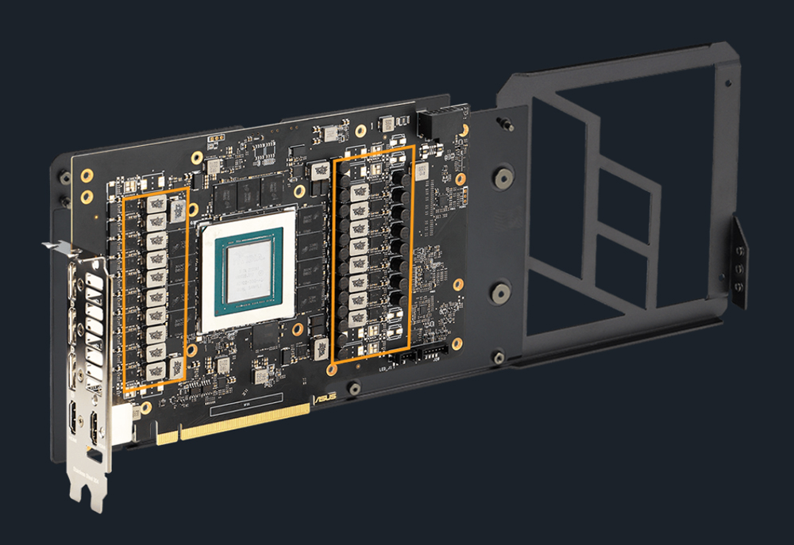

Components and Architecture
Key Components of a Graphics Card
GPU (Graphics Processing Unit):
The core of the graphics card, responsible for all the calculations needed to render images.
Modern GPUs have thousands of cores to handle parallel processing tasks efficiently.
Memory (VRAM):
Dedicated memory used by the GPU to store image data and textures.
The amount and speed of VRAM significantly impact the performance of the graphics card.
VRM (Voltage Regulator Module):
Ensures that the GPU and memory receive a stable and adequate power supply.
Critical for maintaining performance and preventing hardware damage.
Cooling Solutions:
Includes fans, heatsinks, and sometimes liquid cooling systems to dissipate heat generated by the GPU.
Effective cooling is essential for maintaining performance and preventing overheating.
Connectors:
Various output connectors (HDMI, DisplayPort, DVI, VGA) to connect the graphics card to monitors and other display devices.
Power connectors (6-pin, 8-pin) to supply additional power from the PSU (Power Supply Unit).